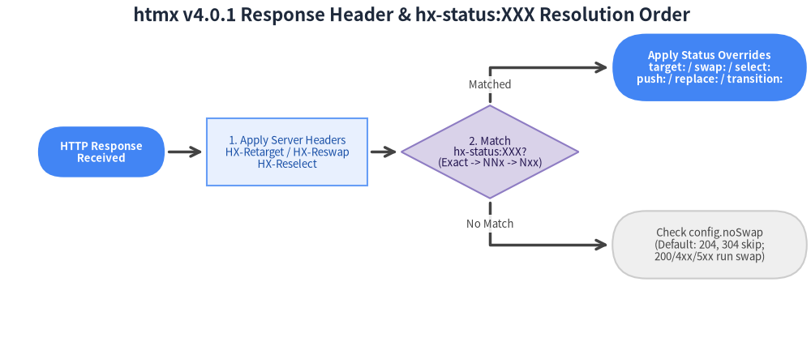

5. ヘッダー・イベント・ステータス制御 (Headers, Events & Status Routing)
htmx v4.0.1 は、標準化された HX-* HTTP ヘッダー、宣言的な HTTP ステータスルーティング（hx-status:XXX）、そして統一されたリクエストコンテキスト detail.ctx を公開するコロン区切りの htmx:phase:action イベントバスによって、クライアントとサーバーのハイパーメディア状態を緊密に連携させます。

Source Code
from drawlib import canvas
from drawlib.diagrams.sequence import Participant, PhosphorIcon, SequenceDiagram
from drawlib.styles import Styles
canvas.clear()
canvas.setup(width=164, height=106)
d = SequenceDiagram(
node_style=Styles.Primary,
node_text_style=Styles.DarkBold.patch(text_size=10.0),
edge_style=Styles.DarkBold,
edge_text_style=Styles.Dark.patch(text_size=9.5),
node_card_style=Styles.Neutral,
title="htmx v4.0.1 Colon-Separated Event Lifecycle & Header Exchange",
autonumber=True,
col_width=44.0,
step_y=6.5,
)
dom = d.add(Participant("DOM Element\n& Listeners", width=26, height=14, icon=PhosphorIcon.CODE, icon_size=6.5))
core = d.add(
Participant("htmx v4 Core\n(detail.ctx)", width=26, height=14, icon=PhosphorIcon.GEAR, icon_size=6.5, card_style=Styles.PrimaryNeutral)
)
server = d.add(Participant("Hypermedia\nServer", width=26, height=14, icon=PhosphorIcon.HARD_DRIVES, icon_size=6.5))
dom.request(core, "Trigger + htmx:confirm (issueRequest)")
core.request(dom, "htmx:config:request & htmx:before:request")
core.request(server, "fetch() + HX-Request, HX-Source (tag#id), HX-Request-Type")
with d.alt("HTTP 200 / 422 / 5xx Response") as blk:
blk.style = Styles.Neutral.patch(line_style="dashed")
server.reply(core, "HTML Body + HX-Trigger / HX-Retarget / Status", style=Styles.PrimaryBold)
core.request(dom, "htmx:before:response -> htmx:after:request")
core.request(core, "Apply HX-Retarget & Match hx-status:XXX")
core.request(dom, "htmx:before:swap -> DOM Swap -> htmx:after:swap")
core.request(dom, "htmx:after:settle & htmx:finally:request", style=Styles.Success)
d.draw(xy=(6.0, 4.0))
canvas.save()
5.1 HTTP リクエストヘッダーとレスポンスヘッダー
htmx が発行するすべてのリクエストには構造化されたメタデータヘッダーが付与され、サーバー側で「どの要素がどのような更新を求めているか」を正確に判別できます。
htmx v4.0.1 が送信するリクエストヘッダー
| リクエストヘッダー | htmx v4.0.1 における値・形式 | htmx 2 からの変更点と用途 |
|---|---|---|
HX-Request |
"true" |
htmx が発行するすべての fetch() リクエストに常時付与される。 |
HX-Source |
tag#id（例: button#save-btn または form） |
htmx 2 の HX-Trigger / HX-Trigger-Name を統合・置換。小文字タグ名と #id で表現。 |
HX-Target |
tag#id（例: div#results） |
htmx 2 の ID のみの形式から tag#id 形式へアップグレード。 |
HX-Request-Type |
"partial" または "full" |
v4 新設: 部分要素ターゲット時は "partial"、body 対象・履歴復元・hx-select 使用時は "full"。 |
HX-Current-URL |
現在のブラウザ URL（location.href） |
サーバー側で遷移元・現在ページの URL を参照するために使用。 |
HX-Boosted |
"true" |
hx-boost が有効なリンクやフォームからのリクエスト時に付与される。 |
HX-History-Restore-Request |
"true" |
ブラウザの戻る/進む操作による履歴復元リクエスト時に付与される。 |
サーバーが返却するレスポンスヘッダー
| レスポンスヘッダー | 指定可能な値 | htmx v4.0.1 における効果 |
|---|---|---|
HX-Trigger |
イベント名（refreshTable）または JSON（{"showToast": {"msg": "Saved"}}） |
レスポンス処理完了時にクライアント側でカスタム DOM イベントを発火する（旧 After-Swap 等を統合）。 |
HX-Retarget |
拡張 CSS セレクタ（例: #error-banner, closest .card） |
クライアント要素の hx-target をサーバー側から上書き変更する。 |
HX-Reswap |
スワップ指定（例: innerMorph transition:true） |
クライアント要素の hx-swap 戦略をサーバー側から上書き変更する。 |
HX-Reselect |
CSS セレクタ（例: #summary-fragment） |
hx-select を上書きし、レスポンス HTML から特定要素のみを抽出する。 |
HX-Push-Url |
URL パスまたは "false" |
ブラウザ履歴（history.pushState()）に新しい URL を追加する。 |
HX-Replace-Url |
URL パスまたは "false" |
現在のブラウザ履歴エントリ（history.replaceState()）を置換する。 |
HX-Location |
URL 文字列または HCON/JSON（{"path": "/dashboard", "target": "#main"}） |
フルページリロードを行わず、AJAX 経由で画面遷移を実行する。 |
HX-Redirect |
URL 文字列（例: /login） |
ブラウザ全体のフルページリダイレクト（location.href）を実行する。 |
HX-Refresh |
"true" |
現在のページをブラウザ全体で強制リロード（location.reload()）する。 |
5.2 宣言的 HTTP ステータスルーティング (hx-status:XXX)
htmx 2 では 4xx や 5xx のエラー応答はデフォルトでスワップされませんでしたが、htmx v4.0.1 では 204 No Content と 304 Not Modified を除くすべての HTTP ステータスコードがデフォルトでスワップされます（htmx.config.noSwap = [204, 304] で制御）。
特定のステータスコード（422 Unprocessable Entity や 5xx など）に応じてスワップ先や履歴更新を宣言的に切り替えるには、hx-status:XXX 属性を使用します。

Source Code
from drawlib import canvas
from drawlib.diagrams.flow import Decision, End, FlowDiagram, Process, Start
from drawlib.styles import Styles
canvas.clear()
canvas.setup(width=192, height=82)
flow = FlowDiagram(
node_style=Styles.Neutral.patch(text_size=9.5),
edge_style=Styles.DarkBold,
edge_text_style=Styles.Dark.patch(text_size=9.5),
title="htmx v4.0.1 Response Header & hx-status:XXX Resolution Order",
)
resp = flow.add(Start("HTTP Response\nReceived", width=30, height=12, style=Styles.PrimaryFlat.patch(text_size=9.5), text_style=Styles.WhiteBold.patch(text_size=9.5)), xy=(20, 42))
hdrs = flow.add(Process("1. Apply Server Headers\nHX-Retarget / HX-Reswap\nHX-Reselect", width=38, height=16, style=Styles.PrimaryNeutral.patch(text_size=9.5)), xy=(64, 42))
match = flow.add(Decision("2. Match\nhx-status:XXX?\n(Exact -> NNx -> Nxx)", width=42, height=22, style=Styles.SecondaryNeutral.patch(text_size=9.5)), xy=(112, 42))
override = flow.add(End("Apply Status Overrides\ntarget: / swap: / select:\npush: / replace: / transition:", width=46, height=16, style=Styles.PrimaryFlat.patch(text_size=9.5), text_style=Styles.WhiteBold.patch(text_size=9.5)), xy=(164, 62))
noswap = flow.add(End("Check config.noSwap\n(Default: 204, 304 skip;\n200/4xx/5xx run swap)", width=46, height=16, style=Styles.Neutral.patch(text_size=9.5)), xy=(164, 20))
resp.connect(hdrs, padding=1.0)
hdrs.connect(match, padding=1.0)
match.connect(override, label="Matched", start_side="top", end_side="left", padding=1.0)
match.connect(noswap, label="No Match", start_side="bottom", end_side="left", padding=1.0)
flow.draw(xy=(4.0, 4.0))
canvas.save()
ワイルドカード解決順序と指定可能なオプション
htmx は最も具体的な指定から順にマッチングを行い、最初に一致したルールを適用します。
- 完全一致コード:
hx-status:422やhx-status:404 - 10の位ワイルドカード (
NNx):hx-status:50x（500〜509に一致） - 100の位ワイルドカード (
Nxx):hx-status:4xxやhx-status:5xx
属性値にはスペース区切りで swap:、target:、select:、push:、replace:、transition: を指定できます。
<form hx-post="/checkout/pay"
hx-target="#order-confirmation"
hx-push-url="/checkout/complete"
hx-status:422="target:#payment-errors swap:innerMorph push:false"
hx-status:409="target:#cart-conflict swap:outerHTML push:false"
hx-status:5xx="target:#global-toast swap:afterbegin push:false">
<input type="text" name="card_token">
<div id="payment-errors"></div>
<button type="submit">Complete Purchase</button>
</form>
[!NOTE] サーバーが
HX-Retarget、HX-Reswap、HX-Reselectヘッダーを返した場合、htmx はまずそれらのレスポンスヘッダーを適用し、その後に一致したhx-status:XXXの設定を上書き適用します。
5.3 コロン区切りのライフサイクルイベントと detail.ctx
htmx 4 では、htmx 2 のキャメルケース名（htmx:configRequest, htmx:afterSwap）が廃止され、一貫したコロン区切りの htmx:phase:action 命名規則に統一されました。
| カテゴリ | イベント名 | キャンセル可否 | 発火タイミングと主な用途 |
|---|---|---|---|
| DOM 初期化 | htmx:before:process / htmx:after:process |
before は可 |
DOM ノードやサブツリーの属性スキャン前後に発火。 |
| DOM 初期化 | htmx:before:init / htmx:after:init |
before は可 |
個別要素への内部状態（elt._htmx）初期化前後に発火。 |
| DOM 破棄 | htmx:before:cleanup / htmx:after:cleanup |
不可 | 要素削除時のイベントリスナー・内部状態クリーンアップ前後に発火。 |
| 確認ダイアログ | htmx:confirm |
可 (preventDefault()) |
リクエスト前に発火。非同期確認用の detail.issueRequest() / dropRequest() を提供。 |
| リクエスト | htmx:config:request |
可 (preventDefault()) |
detail.ctx.request.headers、.body (FormData)、.action を変更可能。 |
| リクエスト | htmx:before:request |
可 (preventDefault()) |
すべての設定が完了し、fetch() を呼び出す直前に発火。 |
| レスポンス | htmx:before:response |
可 (preventDefault()) |
fetch() のヘッダー到着直後、ボディストリーム（ctx.response.raw）消費前に発火。 |
| レスポンス | htmx:after:request |
不可 | レスポンステキスト（detail.ctx.text）の読み取り完了後に発火。 |
| レスポンス | htmx:finally:request |
不可 | 成功・失敗・中断にかかわらず、発行されたリクエストの終了時に必ず発火。 |
| スワップ | htmx:before:swap / htmx:after:swap |
before は可 |
DOM スワップの直前・直後に発火（detail.tasks にスワップタスク配列を保持）。 |
| スワップ | htmx:finally:swap |
不可 | スワップ処理の最後に成功・失敗を問わず発火。 |
| Settle | htmx:before:settle / htmx:after:settle |
不可 | CSS トランジション適用前後に発火（detail.newContent を保持）。 |
| エラー | htmx:response:error |
不可 | サーバーが HTTP 400 以上のエラーステータスを返した際に発火。 |
| エラー | htmx:error |
不可 | ネットワーク障害・タイムアウト・スワップ例外を統合して通知（detail.error）。 |
| 制御用 | htmx:abort |
ユーザーが送出 | htmx.trigger("#elt", "htmx:abort") を呼ぶと進行中の通信を中断する。 |
evt.detail.ctx によるリクエストコンテキストの参照と変更
リクエストおよびスワップ関連のすべてのイベントは、evt.detail.ctx (HtmxRequestCtx) を通じて統一されたコンテキストオブジェクトを公開します。
document.body.addEventListener('htmx:config:request', (evt) => {
const { ctx } = evt.detail;
// Attach a dynamic bearer token and correlation ID to every request
ctx.request.headers['Authorization'] = `Bearer ${window.authToken}`;
ctx.request.headers['X-Correlation-ID'] = crypto.randomUUID();
// Append a field to the FormData body before encoding
if (ctx.request.body instanceof FormData) {
ctx.request.body.set('client_tz', Intl.DateTimeFormat().resolvedOptions().timeZone);
}
});
5.4 インラインイベントハンドラ (hx-on:*) と非同期 htmx:confirm
hx-on:* によるインラインイベント処理
標準の DOM イベントやコロン区切りの htmx:* イベントを、hx-on:<event-name> 属性で HTML 要素に直接記述できます。
<!-- Reset a form automatically after a successful 200 swap -->
<form hx-post="/comments"
hx-target="#comment-feed"
hx-swap="beforeend"
hx-on:htmx:after:swap="if (event.detail.ctx.response.status === 200) this.reset()">
<textarea name="body" required></textarea>
<button type="submit">Post Comment</button>
</form>
非同期カスタム確認モーダルの実装 (htmx:confirm)
hx-confirm="Are you sure?"（標準 window.confirm()）や hx-confirm="js:showCustomModal()"（Promise の解決を待機）に加え、htmx:confirm イベントをフックして独自の <dialog> モーダルと連携させることができます。
document.body.addEventListener('htmx:confirm', (evt) => {
const message = evt.detail.ctx.sourceElement.getAttribute('hx-confirm');
if (!message) return;
// Prevent the default window.confirm() dialog
evt.preventDefault();
// Open a custom HTML <dialog> and call issueRequest() or dropRequest()
openConfirmationDialog(message, {
onConfirm: () => evt.detail.issueRequest(),
onCancel: () => evt.detail.dropRequest(),
});
});